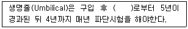

잠수기능사 (2013-07-21 기출문제)
1과목: 잠수물리
1. 물속에서 빠른 음파속도가 미치는 영향으로 가장 적합한 것은?
- 고막에 통증이 생긴다.
- 집중력이 흐려진다.
- 귀가 울린다.
- 방향감각을 상실한다.
(정답률: 81%)

2. 잠수용 호흡기체가 1%의 이산화탄소로 오염되었을 때 수심이 깊어지면 독성효과가 증가한다. 기체의 법칙 중 이러한 경우와 연관이 깊은 것은?
- 보일 법칙
- 샤를 법칙
- 달톤 법칙
- 아르키메데스 원리
(정답률: 59%)
3. 잠수 중 하강으로 인해 발생하는 압착현상을 설명하는 기체의 법칙은?
- 달톤 법칙
- 헨리법칙
- 샤를 법칙
- 보일 법칙
(정답률: 72%)
4. 수중에서 10 ft(약 3 m) 의 거리에 있는 물체는 잠수사에게 얼마의 거리에 있는 것처럼 보이는가?
- 5 ft
- 7.5 ft
- 13.3 ft
- 20 ft
(정답률: 79%)
5. 부력과 관련한 내용이 옳지 않은 것은?
- 부력의 종류는 양성, 중성 , 음성부력의 3가지가 있다.
- 숨을 들이쉴 대의 사람의 비중은 평균적으로 1보다 크다.
- 잠수에 가장 적합한 부력은 중성부력이다.
- 액체(물)에 물체가 뜨거나 가라앉는 것은 그 물체의 비중에 의해서 결정된다.
(정답률: 71%)
6. 1 기압을 미터법으로 옳게 표시한 것은?
- 0.1025 kg/cm2
- 1.025 kg/cm2
- 0.1013 kg/cm2
- 1.013 kg/cm2
(정답률: 78%)
7. 잠수복이 몸에 비해 큰 경우 잠수복 안으로 들어온 물이 체온에 의해 데워지지만 곧 외부의 찬물과 교환되어 체온이 급격하게 떨어지게 된다. 이러한 물의 온도변화와 가장 관계가 깊은 현상은?
- 대류
- 복사
- 증발
- 전도
(정답률: 63%)
8. 다음 중 절대 압력이란?
- 압력계기가 가리키는 압력
- 지구표면에 둘러싸여 있는 대기 중의 압력
- 계기압과 대기압의 합
- 해면상의 압력
(정답률: 87%)
9. 다음 중 열의 전도율이 가장 낮은 것은?
- 철
- 헬륨
- 물
- 공기
(정답률: 75%)
10. 기체 중 압력 하에서 잠수사의 방향 감각 상실, 판단능력 저하 등 마취 작용을 일으키는 기체는?
- 산소
- 질소
- 이산화탄소
- 헬륨
(정답률: 83%)
11. 다음중 기체색전증이 가장 잘 일어나는 경우는?
- 호흡을 짧게 자주 할 때
- 잠수 중 하강할 때
- 수심이 얕은 곳으로 갑자기 올라올 때
- 수심이 깊은 곳에서 잠수할 때
(정답률: 72%)
12. 중증 감압병 환자나 기체색전증 환자를 재압챔버가 있는 의료시설로 옮길 때의 주의사항 중 틀린 것은?
- 가능하면 100% 산소를 공급한다.
- 비행기로 옮길 때는 가능한 낮게 비행하도록 한다.
- 머리를 다리보다 높게 하여 후송한다.
- 가급적 최대한 빠르게 후송한다.
(정답률: 93%)
13. 다음 중 감압병 환자를 치료하는 방법으로 가장 적합한 것은?
- 즉시 재압실에 수용하고 치료한다.
- 즉시 수중 감압을 실시한다.
- 뜨거운 물로 찜질한다.
- 즉시 진정제를 투여한다.
(정답률: 93%)
14. 공기감압표에서 감압 정지할 때 제일 마지막 정시 수심은?
- 3 m (10 ft)
- 6 m (20 ft)
- 9 m (30 ft)
- 10 m (33 ft)
(정답률: 45%)
15. 잠수 중 몸속에 이산화탄소가 축적되는 원인과 가장 거리가 먼 것은?
- 수중에서의 심한 노동
- 호흡조절기의 과다한 저항
- 공기를 아끼면서 호흡
- 빠른 하잠
(정답률: 80%)
2과목: 잠수위생
16. 다음 잠수과정 중 현기증 발생 가능성이 가장 높은 때는?
- 하잠 중
- 해저도착 직후
- 해저출발 직후
- 상승 중
(정답률: 68%)
17. 높은 지대에 위치한 호수 등에서 잠수 했을 때 소요되는 감압시간을 바다에서 동일 조건의 잠수를 했을 때와 비교한 내용이 옳은 것은?
- 높은 지대에서의 잠수는 더 긴 감압시간이 필요하다.
- 높은 지대에서의 잠수는 더 짧은 감압시간이 필요하다.
- 높은 지대의 물이 민물일 때는 더 짧은 감압시간이 필요하다.
- 감압시간에는 차이가 없다.
(정답률: 81%)
18. 재압챔버의 압력 검사 시기에 대한 설명 중 틀린 것은?
- 최초 설치 시
- 제작일자로부터 매 2년마다
- 이동 또는 재설치 시
- 설치된 장소에서 5년마다
(정답률: 77%)
19. 감압정지 할 때의 자세로 가장 적합한 것은?
- 감압수심에서 가만히 서서 정지한다.
- 감압수심근처에서 위 아래로 움직이며 천천히 핀을 움직인다.
- 감압수심에서 주위를 돌면서 빠르게 움직인다.
- 감압수심에서 다리를 위로 한 자세를 유지한다.
(정답률: 73%)
20. 하반신 마비와 배뇨 곤란은 다음 중 어느 증상에 속하는가?
- 제1형 감압병 증상
- 중추신경계 증상
- 기체색전증 증상
- 국부 통증증상
(정답률: 78%)
21. 다음 중 발생 원인이 다른 하나는?
- 감압병
- 기체색전증
- 기흉
- 종격동 기종
(정답률: 54%)
22. 윤활유를 사용하는 공기압축기로 충전하여 다이버가 장시간 호흡할 때 유발될 수 있는 질병은?
- 공기색전증
- 감압병
- 기흉
- 지질성 폐렴
(정답률: 64%)
23. 잠수 중 산소 중독은 언제 일어날 수 있는가?
- 순수 산소를 호흡기체로 잠수할 때
- 호흡공기가 오염됬을 때
- 물속에서 호흡을 참으면서 잠수할 때
- 호흡을 너무 많이 쉴 때
(정답률: 72%)
24. 호흡기체 중에 이산화탄소 함유량이 많을 때 감압병에 미치는 영향에 관한 설명으로 가장 적합한 것은?
- 아무런 영향을 주지 않는다.
- 감압병 발생을 증가시킨다.
- 감압병 발생을 감소시킨다.
- 단지 감압병의 증상을 악화시킨다.
(정답률: 81%)
25. 질소 마취가 일어나기 시작하는 수심으로 가장 적절한 것은?
- 10 m 이하
- 20 m 이하
- 30 m 이하
- 40 m 이하
(정답률: 87%)
26. 표면공급식 잠수가 스쿠버 잠수보다 유리한 이유가 아닌 것은?
- 잠수를 오래할 수 있다.
- 기동성이 좋다.
- 안전 및 작업진척 확인이 용이하다.
- 통신이 용이하다.
(정답률: 88%)
27. 다음 ( )에 알맞은 것은?

- 검사일자
- 출고일자
- 제작일자
- 구입일자
(정답률: 83%)
28. 잠수용 호흡기체의 순도 분석은 일반적으로 몇 개월마다 하는 것이 원칙인가?
- 3개월
- 6개월
- 12개월
- 24개월
(정답률: 65%)
29. 시야가 좋고, 수심이 20 m 이내에서 수중 탐색 작업에 가장 적합한 잠수 장비는?
- 후카
- 개방회로 스쿠바
- KMB 밴드 마스크
- 수퍼라이트 - 17 헬멧
(정답률: 64%)
30. KMB 밴드마스크의 1일 정비 항목에 해당하지 않는 것은?
- 통화장치를 빼내어 작동 확인
- 머리덮개 분리및 건조
- 공기 공급구 보호 캡(cap) 청소후 부착
- 코 압력장치 축에 실리콘 그리스 바르기
(정답률: 48%)
3과목: 잠수장비
31. 다음 중 잠수종(diving bell)의 중요 구성요소로 적합하지 않는 것은?
- 기체장치
- 원격장치
- 아크릴 돔
- 통화장치
(정답률: 62%)
32. 잠수현장에 용량이 부족한 저압공기압축기가 있다면 또 다른 저압공기압축기를 연결하여 사용하면 용량과 압력은 어떻게 되는가?
- 용량은 2배 증가, 압력은 1배 감소
- 용량은 2배 증가, 압력은 일정
- 용량과 압력이 일정
- 용량과 압력이 감소
(정답률: 76%)
33. 새 공기 호스를 검사할 때 고려되는 가장 중요한 사항은?
- 구입일자
- 검사일자
- 출고일자
- 제작일자
(정답률: 78%)
34. 잠수장비의 역지밸브 (non-return valve)검사는 언제 하는가?
- 매 잠수 시
- 매 잠수일 첫 잠수 전
- 매 일
- 매 주
(정답률: 85%)
35. 공기압축기를 정지한 후 파이로트 밸브(pilot valve)를 잠그는 주 이유는?
- 잔여공기를 완전히 배출하기 위하여
- 공기 파이프 계통의 파손을 방지하기 위하여
- 다음 운전시 엔진의 부하를 적게하기 위하여
- 드레인을 빼기 위하여
(정답률: 79%)
36. 스쿠버장비 중 빙초산세척을 해서는 안 되는 부품은?
- 피스톤
- 1단계 몸체
- 호흡조절기 필터
- 공기통 목부분
(정답률: 87%)
37. 용접발전기 중 발전형과 정류기형을 비교했을 때 정류기형의 특징에 속하는 것은?
- 고장이 나기 쉽고 소음이 많다.
- 보수 점검이 간단하다.
- 구동부와 발전부로 구성한다.
- 용접시 아크가 잘 발생하지 않는다.
(정답률: 45%)
38. 수퍼라이트-17 헬멧의 측면부품대(side block assembly)에서 역지변이 평행으로 되어 있어 주 기체공급호스가 잠수사의 어깨 뒤쪽으로 가는 형태가 아닌 것은?
- A형
- B형
- C형
- K형
(정답률: 45%)
39. 나침반(compass)의 사용방법으로 가장 적절한 것은?
- 석유제 윤활유를 사용한다.
- 회전 숫자판을 제거하고 사용한다.
- 공기통에 가깝게 붙여서 사용한다.
- 잔압계와 연결하여 사용한다.
(정답률: 77%)
40. 상용 압력이 3000 psi 인 공기통을 수압검사 할 때 약 몇 psi 까지 압력을 올리는가?
- 3000 psi
- 5000 psi
- 6000 psi
- 9000 psi
(정답률: 85%)
41. 수중절단 작업 중 산소 공병을 교환하려한다. 고압가스 창고에 각종 색깔의 압력 용기가 있을 때 산소 용기의 색깔은?
- 흑색
- 녹색
- 적색
- 회색
(정답률: 89%)
42. 다음 중 수중용접 시 일반적으로 널리 사용되는 발전기의 용량은?
- 200A DC
- 300A DC
- 200A AC
- 300A AC
(정답률: 62%)
43. 수중 수직용접에서 두상ㄷ용접을 할 때 가장 적절한 용접봉의 각도는?
- 10~15°
- 20~35°
- 35~55°
- 60~75°
(정답률: 72%)
44. 수중 촬영에서 고려되는 가이드 넘버(guide number)란?
- 인공광원의 광량을 말한다.
- 피사체의 심도를 말한다.
- 셔터 스피드를 말한다.
- 조리개의 크기를 말한다.
(정답률: 44%)
45. 27 파운드의 다이너마이트 폭약을 사용하려고 한다. 최소의 안전대피거리는?
- 약 180 m (600 feet)
- 약 210 m (700 feet)
- 약 240 m (800 feet)
- 약 270 m (900 feet)
(정답률: 59%)
4과목: 잠수작업
46. 수중의 잠수사에게 표준신호에서 탐색신호로 전환하려고 지시할 때의 줄신호는?
- 잠수사가 7번 당긴다.
- 보조사가 7번 당긴다.
- 잠수사가 4-3번을 당긴다.
- 보조사가 4-3번을 당긴다.
(정답률: 58%)
47. 전압이 40 V이고, 저항이 0.5Ω일 때 흐르는 전류의 양은?
- 20 A
- 40 A
- 80 A
- 200 A
(정답률: 49%)
48. 산업안전보건법령에서 정한 잠수사의 1 주 근로시간은 총 몇 시간을 초과할 수 없는가?
- 28 시간
- 34 시간
- 38 시간
- 40 시간
(정답률: 77%)
49. 다음 폭약 중 펜트리트(PE수)에 대한 설명이 아닌 것은?
- 물에 용해되지 않는다.
- 충격에는 둔감하고 마찰에는 예민하다.
- 뇌관에는 예민하고 화염으로는 점화되지 않는다.
- 뇌관의 첨장약과 도폭선의 심약에 사용된다.
(정답률: 45%)
50. 2 × 6 × 37의 와이어의 표시중 숫자의 의미가 옳은 것은?
- 2 = 강도
- 6 = 둘레
- 37 = 묶음의 수
- 37 = 각 가닥의 강선 수
(정답률: 70%)
51. 침선 인양에서 배수펌프를 이용할 시 고려되는 사항과 거리가 먼 것은?
- 가급적 용량이 큰 배수펌프를 많이 사용해야 한다.
- 내부방수방법을 주로 사용해야한다.
- 흘수선 아래에 패칭이 되어 있어야 한다.
- 펌프의 배수량 또는 침수량으로 부양속도를 조절하여야한다.
(정답률: 40%)
52. 수심 20 m에 있는 딱딱한 뻘 바닥에 폭 30 cm, 깊이 50 cm 정도의 긴 도랑을 파려고 할 때 다음 중 가장 적합한 것은?
- 공기제토기 (Air Lift)
- 크레인 (Crane)
- 드릴 (Drill)
- 워터젯트 (Water Jet)
(정답률: 76%)
53. 수중조사를 계획할 시 고려해야 할 사항으로 가장 거리가 먼 것은?
- 조석
- 조류
- 선박의 운항 빈도
- 수중구조물 탐지기 작동
(정답률: 60%)
54. 선박이나 해양구조물의 부식방지를 위한 아노드(anode)의 재질은?
- 아연
- 은
- 니켈
- 납
(정답률: 78%)
55. 배수펌프에 관한 설명으로 옳지 않은 것은?
- 흡입계통에 기밀이 유지되어야 한다.
- 흡입구의 수직 길이가 약 8m 이내여야 한다.
- 기계의 구조와 손질이 복잡하다.
- 공회전시 임펠러가 손상되기 쉽다.
(정답률: 53%)
56. 좌초반응력에 대해 설명한 내용 중 틀린 것은?
- 좌초반응력은 좌초선의 부력을 복원하여 줄일 수 있다.
- 좌초선의 부력과 선체 무게에 변화에 따라 그 값이 달라진다.
- 좌초된 배를 이초시키는데 필요한 수평 당김의 힘이다.
- 좌초반응력은 정해진 수치가 없다.
(정답률: 58%)
57. 비 전기식 뇌관의 기폭제인 도화선(Safety fuse)의 사용 전 연소시간을 산출해야 하는 이유 중 가장 적합한 것은?
- 예민도 측정 때문이다.
- 성능 및 강도검사 때문이다.
- 대피 시간 측정 때문이다.
- 강력한 효과를 얻기 위해서이다.
(정답률: 77%)
58. 두꺼운 철판(6 mm 이상)의 수중 산소아크 절단 시 절단 표면과 전극봉의 각도로 가장 적합한 것은?
- 45°
- 90°
- 30°
- 0°
(정답률: 46%)
59. 합성 섬유색의 특징으로 옳은 것은?
- 내구성이 낮다.
- 비중이 높다.
- 유연도가 낮다.
- 강도가 강하다.
(정답률: 68%)
60. 발파에 관련한 설명으로 옳지 않은 것은?
- 수중발파는 해저암의 상태에 따라 내부장약발파인 천공발파와 외부장약발파인 표면발파로 구문한다.
- 잠수사에 의한 천공방법은 주로 착암기를 사용하여 천공하며, 좁은지역이나 정밀도가 요구되는 경우에 적절하다.
- 자유면은 1~6의 자유면이존재하며, 자유면의 수가 적을수록 발파효과가 크다.
- 소할발파법에는 천공법, 복토법, 사공법 등이 있으며 천공법이 가장 양호하다.
(정답률: 59%)